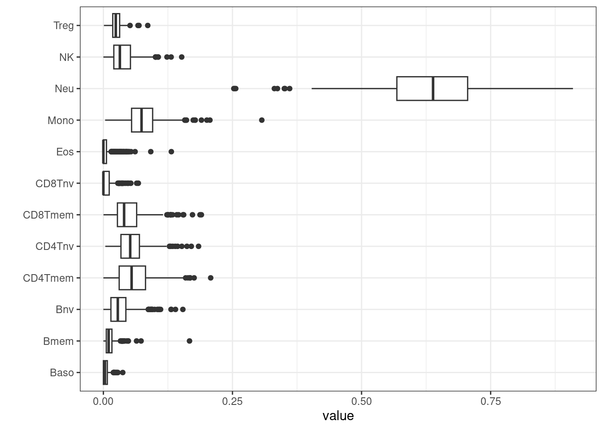
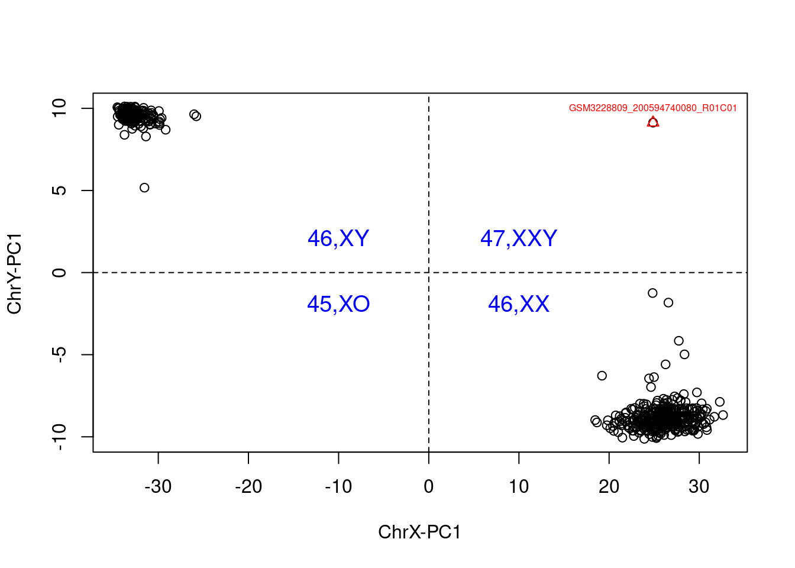
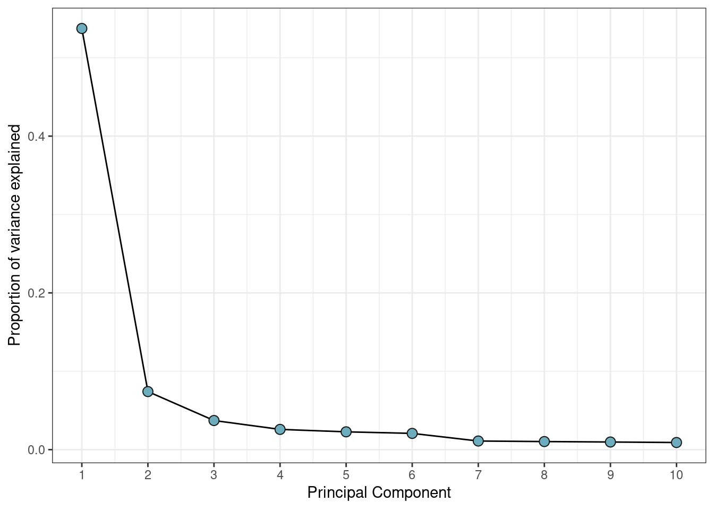

Numerous phenotypic traits can be accurately inferred from DNA methylation (DNAm) data, including immune cell composition29, sex31, smoking status, and both chronological and biological age through the application of epigenetic clocks. These DNAm-derived predictions can be valuable for enriching or completing sample metadata, especially when certain variables were not directly measured during sample collection. Moreover, they serve as an important quality control tool by helping to identify potential sample mix-ups or data inconsistencies—for instance, mismatches between predicted and recorded sex may indicate errors in sample labeling or processing.
Here we outline methods to predict immune cell composition and sex from DNAm data as part of the DNAmArray pipeline.
The EPIDish package can be used to predict blood cell types. It is a R package that infers the proportions of a priori known cell-types present in a sample representing a mixture of such cell-types. Right now, the package can be used on DNAm data of blood-tissue of any age, from birth to old-age, generic epithelial tissue and breast tissue. The package also provides a function that allows the identification of differentially methylated cell-types and their directionality of change in Epigenome-Wide Association Studies.
After proportions of cell types have been estimated, they can be plotted and inspected.
BloodFrac.m_long <- pivot_longer(as.data.frame(BloodFrac.m), cols = colnames(BloodFrac.m))
BloodFrac.m_long %>%
ggplot(aes(y=name, x=value)) +
geom_boxplot() +
theme_bw() + ylab('')
Cell counts can be added to targets for use later when building EWAS models.
##
## TRUE
<<<<<<< HEAD
## 598Other extensions, including UniLIFE which predicts 19 immune cell-types applicable to blood tissue of any age, are available from within EpiDISH, for use in specific contexts29.
Sex can also be predicted from CpGs on the X-chromosome. Here, we outline the use of estimateSex from wateRmelon31.
## Normalize beta values by Z score...## Fishished Zscore normalization.
Then a measure can be calculated, determining the sex of each sample and tabulated against recorded sex.
##
## Female Male
## 47,XXY 0 1
<<<<<<< HEAD
## Female 337 1
## Male 2 257As you can see, there is an outlier in the data, which we can remove.
This means that we can feel increased confidence that no incorrect labelling or mix-ups are remaining.
========Our workflow uses the functional normalization approach16, which exploits internal control probes designed to detect technical variations without assaying biological differences.
It has been shown to perform favourably when compared to other approaches17. Using the internal control probes avoids the problems associated with global normalization methods, where biological variation can be mistaken for a technical effect and removed. This is especially important in studies where groups are expected to have differential methylation signatures, such as multiple tissue studies18.
Conversations on the best approaches for normalization in DNAm data pipelines are ongoing19.
The default of selecting only two principal components is often too low for this type of data. Often you will see a drop-off in proportion of variance explained after a certain number of principal components, and this can indicate an efficient selection.
var_explained %>% ggplot(aes(x=PC, y=var_explained)) +
geom_line() +
geom_point(color='grey5', fill='#6DACBC', shape=21, size=3) +
scale_x_continuous(breaks=1:ncol(pca$x)) +
xlab("Principal Component") +
ylab("Proportion of variance explained") +
theme_bw()
In order to run normalization the annotation of the
RGset must be updated for EPIC arrays.
By default, functional normalization returns normalized copy number
data making the returned GenomicRatioSet twice the size
necessary when only beta-values or M-values are required. Therefore, we
developed preprocessFunnorm.DNAmArray(), which adds an
option not to return these to the preprocessFunnorm()
function from minfi.
You can now extract the normalized beta values from this object. It can also be advisable to round the beta values to 4 significant figures, which both reduces the data size and provides a realistic measure of the available precision.
If required, these can be transformed to M-values using minfi’s
getM() which applies a logit2-transformation to the
beta-values.
As you can see, this is complete data, but the predicted and assumed sexes are identical. This means that we can feel increased confidence that no incorrect labelling or mix-ups are present.
>>>>>>> a881b47ac32537db4f8636228d059d1464fdc2ea